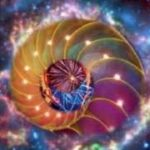
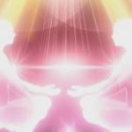
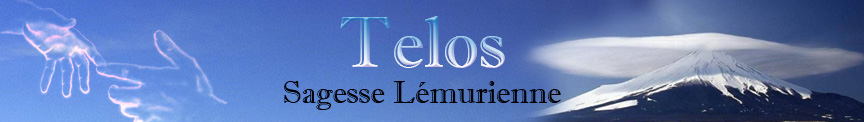

Stage TELOS & la 5D
Inspirés par les Télosiens en 2009, ces modules permettent de réapprendre à s’exprimer dans sa pleine conscience. Le lieu de Castelgirou a été construit et consacré aux énergies de type 4ème/ 5ème dimension caractéristiques du MONT SHASTA, et réactivé plusieurs fois par an suite à mes voyages successifs à SHASTA. La présence éthérique des Télosiens installe un champ vibratoire, dit champ unifié de conscience à l'image de ce qui se vit dans les espaces de 5ème Dimension, et facilite l'expression divine de l'Etre à travers les thèmes proposés.
Inspirés par les Télosiens en 2009, ces stages permettent de reconnecter l’Âme progressivement au Soi (Présence Divine) et d'intégrer cet État d’Être de Sagesse dans sa vie quotidienne .
Ils peuvent être suivis indépendamment. Cependant l'ordre indiqué permet à l'Âme de se libérer, puis de s'exprimer dans la Transparence en ouvrant les portes du cœur christique ou cœur de la Lémurie (thymus) préparant ainsi l’accès à la multi dimensionnalité de l’Être.
Le lieu de Castelgirou a été construit et consacré aux énergies du MONT SHASTA et réactivé plusieurs fois par an suite à mes voyages successifs. La présence éthérique des Télosiens installe un champ vibratoire, dit champ unifié de conscience à l'image de ce qui se vit dans des espaces de 5D, et facilite l’expression de notre Être supérieur de Sagesse à travers les thèmes proposés par les 4 modules.
MODULE n°1 : La séparation avec la Source
L'engloutissement de la Lémurie puis de l’Atlantide symbolise la chute de la conscience de la 5ème à la 3ème dimension et donc la séparation avec la Source. Notre subconscient, à travers nos Âmes porte le traumatisme de cette séparation brutale (déconnexion des brins d'ADN).
A partir de divers outils et méditations, nous invitons la personnalité à reconnecter l'Ame afin de guérir cette blessure. Les émotions liées à la séparation commencent à s'estomper et le voile de l'illusion à se lever.
MODULE n°2 : La Spirale ascensionnelle, retour vers la Source.
A partir d un exercice d’ancrage et de la géométrie sacrée

nous accédons en conscience à un état vibratoire permettant à l’ Âme de retrouver le chemin du « retour à la maison » (expression utilisée par les Télosiens pour traduire la ré intégration de notre état de conscience de 5ème Dimension).Cet exercice provoque de fortes émotions et reconnecte les Âmes à la joie des retrouvailles.La présence de l’énergie des Télosiens intensifient ces ressentis et provoque une véritable sensation de plénitude.
MODULE n°3 : Les cercles de Transparence
Ces exercices permettent de retrouver des aptitudes jadis utilisées comme la télépathie, la clairvoyance ou "clairsentiance", caractéristiques de la

4ème dimension dans laquelle nous rentrons grâce à la compréhension apportée par la physique quantique. Ils donnent accès à un déploiement des synchronicités et de la Loi d'Attraction.Les cercles créatifs nous invitent à rêver en conscience notre futur. "Tout ce qui existe a été rêvé".
MODULE n°4 : La danse du féminin et du masculin.
S’aimer autrement – Nouveau cadre de relations humaines.
Les codes ascensionnels prévoient l’intégration des 2 polarités. Ce qui nous permettra alors de rencontrer l’Être complémentaire que nous recherchons toutes et tous depuis toujours et qui nous fait défaut dans nos relations humaines, parce que nous n’avons pas encore accompli cette alchimie personnelle et intérieure.
Dans le cadre de ce module, nous allons rencontrer la polarité non incarnée et découvrir ainsi la base d'une nouvelle forme de relation humaine.« L’heure des retrouvailles d’Âmes a sonné » disent les guides et les Maîtres , tandis que le département du 24 a pour Esprit Directeur Les retrouvailles d’Âmes.

Cadre de référence des stages : Respect, Simplicité et Sincérité. Le discernement reste la valeur de base, chacun devant rester Maître de sa propre vie sous la guidance de son cœur.
MODALITES D'INSCRIPTION :
Lieu : CASTELGIROU - PLAZAC 24580 – DORDOGNE
Stage en résidentiel : Série des 4 modules = 8 jours
Tarif : 500 eurosPossibilité d'hébergement sur site